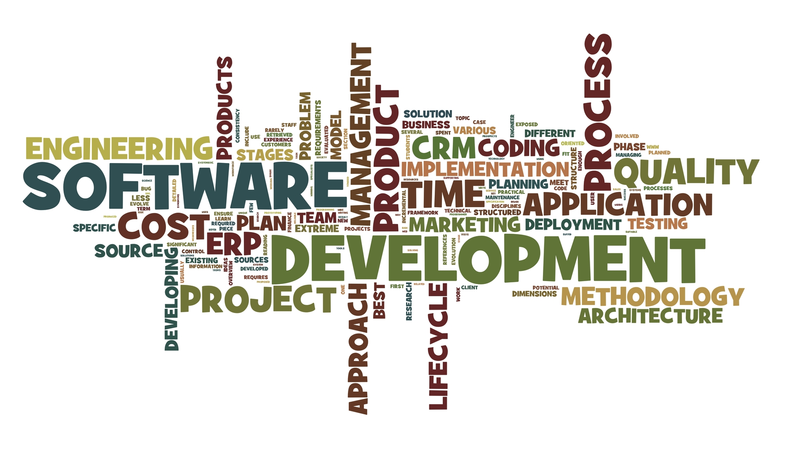
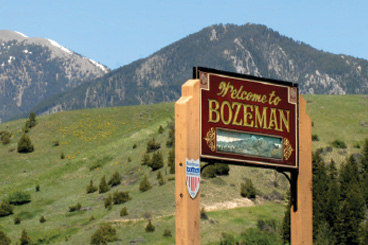

Welcome to Open Hatch at Montana State!
Open Hatch is a non-profit organization
that seeks to match open-source software contributors with communities, tools, and education.
At Montana State, this means networking connections and valuable experience for faculty
and students alike. We don't have any current projects underway, but we'd love suggestions!
Check out the Contact section of this web site to learn how you could recruit help on a project
of your own!

Events
 Montana State University has recently expressed interest in developing a large number of projects that will require technical back-ends. Informational sessions will be held over the next couple of weeks, and they all include pizza!Projects
Find out more about our projects that are currently under construction - how they solve problems, how they work, and how they can help you learn! Getting involved in projects is the number one way to look great to recruiters after graduation, so get started!People
 Find out more about the volunteers working with Open Hatch to make things run smoothly.
Our admins are some of the sharpest students and faculty around... and they are all
willing to help you learn as well. Take advantage of this great resource.
Find out more about the volunteers working with Open Hatch to make things run smoothly.
Our admins are some of the sharpest students and faculty around... and they are all
willing to help you learn as well. Take advantage of this great resource.